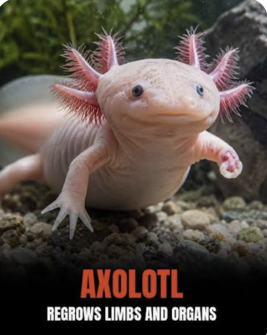

Here are some helpful websites where you can learn more about axolotls, regeneration, their habitat, and why scientists study these amazing animals.
You can use these links if you would like to read more on axolotls and there amazing abilities.

This website explains how scientists study axolotls and their incredible ability to regenerate damaged or lost body parts.
Visit the NIH Axolotl WebsiteThis website has information about axolotl regeneration and explains why axolotls are useful animals for scientific research.
Learn More About AxolotlsThis article explains axolotl regeneration and how scientists have studied the axolotl genome to better understand this unusual ability.
Read About Axolotl Regeneration